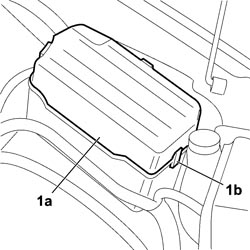
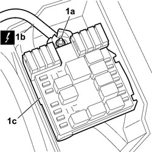
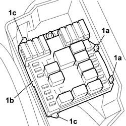
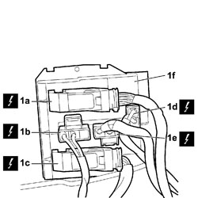

5505A13 ADDITIONAL JUNCTION UNIT IN ENGINE COMPARTMENT - R.R.
- Path
- Procedures > 55 ELECTRICAL EQUIPMENT > 5505 INSTRUMENT/GAUGE ELECTRICAL CIRCUITS > 5505A MULTI-FUNCTION COMPONENTS > 5505A13 ADDITIONAL JUNCTION UNIT IN ENGINE COMPARTMENT - R.R.
- Kind
- repair procedure (removal / refitting; the operation number is the code)
- Applies to
- all engines; all production periods
- Interactive page
- https://sloeber94.github.io/elrnDB-fCrm/en/#/194000668
Applies to: all engines; all production periods
Applies to: all engines; all production periods
 Removing
Removing
 Refitting
Refitting- Turn the ignition key to the OFF position.
- Disconnect the negative battery terminal.
- Wait for 10 minutes before continuing.
Description | Connector | |
|---|---|---|
BATTERY |
- Open the bonnet.
1. Remove the cover (1a) releasing the retainers (1b).

Applies to: all engines; all production periods
1. Undo the nut (1a) fixing the electrical connection (1b), positive cable, to the junction unit (1c) and disconnect the connection.
Description | Connector | |
|---|---|---|
1b | MAXI FUSE BOX ON BATTERY |

Applies to: all engines; all production periods
1. Release the two clips (1a) retaining the junction unit (1b), turn it forwards towards the engine and release it from the retainers on the hinge pins (1c).

Applies to: all engines; all production periods
1. Release the electrical connections (1a), (1b), (1c), (1d) and (1e) underneath the control unit (1f) from the mountings and disconnect them and remove the junction unit from the vehicle.
Description | Connector | |
|---|---|---|
1a | ENGINE COMPARTMENT JUNCTION UNIT |
Description | Connector | |
|---|---|---|
1b | ENGINE COMPARTMENT JUNCTION UNIT |
Description | Connector | |
|---|---|---|
1c | ENGINE COMPARTMENT JUNCTION UNIT |
Description | Connector | |
|---|---|---|
1d | ENGINE COMPARTMENT JUNCTION UNIT |
Description | Connector | |
|---|---|---|
1e | ENGINE COMPARTMENT JUNCTION UNIT |

Applies to: all engines; all production periods
Refitting
Removing- Check that the additional junction unit is not damaged.
- Connect the electrical connections on the underneath of the junction unit attaching the mountings.
Description | Connector | |
|---|---|---|
ENGINE COMPARTMENT JUNCTION UNIT |
- Fit the control unit on the hinge pins and secure it using the two retaining clips.
- Connect the connection for the positive cable to the junction unit and tighten the fixing nut.
- Fit the junction unit cover attaching the retainers.
- Test the operation of the electrical system.
- Connect the negative battery terminal.
Description | Connector | |
|---|---|---|
BATTERY |
Topics linked from this page (4)
- 5580C AIR BAG SYSTEM
- A001 BATTERY
- B001 ENGINE COMPARTMENT JUNCTION UNIT
- B099 MAXI FUSE BOX ON BATTERY
Topics that link to this page (39)
- B013 ENGINE STARTS WITH DIFFICULTY
- B015 ENGINE DOES NOT START (STARTER MOTOR WORKING)
- D003 ENGINE NOT RUNNING SMOOTHLY / (IRREGULAR OPERATION)
- D005 ENGINE DOES NOT PRODUCE BEST PERFORMANCE
- D009 ENGINE NOT FEELING ACCELERATOR PEDAL PRESSURE
- D010 ENGINE IDLE IRREGULAR
- D012 ENGINE IDLING TOO LOW
- D014 ENGINE GOING OFF ON IDLING (THEN RESTARTING)
- D016 POOR ENGINE RESPONSE
- D020 ENGINE CUTS OUT WHILST RUNNING (THEN NOT RESTARTING)
- D021 ENGINE CUTS OUT WHILST RUNNING (THEN RESTARTS)
- J020 REARSCREEN AND DOOR MIRROR DEFROSTING NOT WORKING
- N020 HORNS NOT WORKING
- N023 HORNS WORKING ENDLESSLY
- W005 WHITE EXHAUST FUMES
- W010 BLACK EXHAUST FUMES
- W011 EXCESSIVE EXHAUST FUMES
- Y037 P0380 - PREHEATING UNIT CONTROL (SC TO EARTH)
- Y061 P1612 - FUEL FILTER HEATER RELAY CONTROL (SC TO EARTH)
- 1040AB SUBMERGED FUEL PUMP CHECK
- 1060EB FLOW MODULATOR SOLENOID OPERATION CHECK
- 1060GG CHECK MEASURED AIR MASS
- 1060GL CHECK OPERATION OF MAIN ENGINE CONTROL UNIT RELAY
- 1060GO INTEGRATED THROTTLE BODY OPERATION CHECK
- 1060GS FLOW METER OPERATION CHECK
- 1064BB SUPERCHARGING PRESSURE SOLENOID (PIERBURG) VALVE OPERATION CHECK
- 1064BE CHECK TURBO VALVE PROTECTION FUSE
- 1080CB EGR SOLENOID OPERATION CHECK
- 5505AB CHECK DIESEL PREHEATING RELAY PROTECTION FUSE
- 5505AD ENGINE POWER SUPPLY FUSE CHECK
- 5505AE ENGINE MANAGEMENT CONTROL UNIT POWER SUPPLY FUSE CIRCUIT CHECK
- 5505AE ENGINE MANAGEMENT CONTROL UNIT POWER SUPPLY FUSE CIRCUIT CHECK
- 5505AE ENGINE MANAGEMENT CONTROL UNIT POWER SUPPLY FUSE CIRCUIT CHECK
- 5505AE ENGINE MANAGEMENT CONTROL UNIT POWER SUPPLY FUSE CIRCUIT CHECK
- 5520BA DIESEL PREHEATING RELAY CHECK
- 5520BA DIESEL PREHEATING RELAY CHECK
- 5520CA HEATER PLUGS OPERATION CHECK
- 5530BB BATTERY VOLTAGE CHECK
- 5505A28 CONTAINER FOR ADDITIONAL JUNCTION UNIT IN ENGINE COMPARTMENT - R.R.